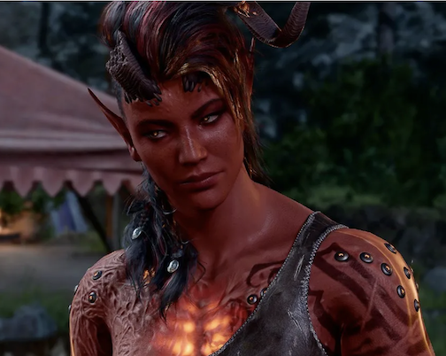

STR: 17 | DEX: 13 | CON: 15 | INT: 8 | WIS:12 | CHA: 10
Karlach is a Zariel Tiefling Barbarian. You can start the questline "Hunt the Devil" for Karlach's personal backstory. Karlach was a prisoner, forced to fight in the the Blood War-- the eternal battle between bad and worse. Karlach can be found in The Risen Road. Make your way through the Blighted Village, past the Gnome that is tied to the windmill, and jump across the gap in the bridge. Head down the road to your right, fight your way through the Hyenas and Gnolls, and continue down to the river where you will see blood on the ground and Karlach resting on the opposite side of the river.